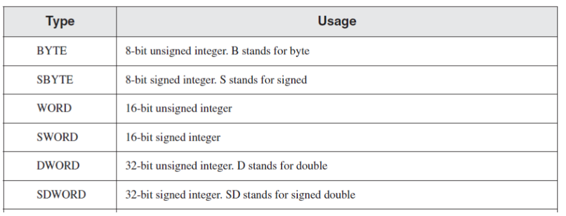

1. Find out, by trial and error, if a program can have multiple of code and data segments. Answer: Yes, an assembly program is able to have multiple data and code segments. It complies/runs with exit code 0. Upon further research, it appears that you are able to "jump" between code and data segments and use different "models" that utilize a different number of code and data segments. 2.Write a program that defines symbolic constants for all twelve months of the year. Create an array variable that uses the symbols as initializers. Answer: Program (Link) 3. Generate a listing file for your program in part 2 and write a description of the machine code bytes generated for each instruction. You might have to guess at some of the meanings of the byte values. Answer: The listing file generated from the program in question 2 starts by defining each symbol(word in this case) to an integer constant. Each constant declared is stored in hexadecimal format. Next when declaring and initializing the array called "monthArray" is done so at offset 00000000 and the corrosponding value for each symbolic constant is replaced by its value to initialize the array of bytes. Listing File (Link) 4. Write a program that contains two instructions: (1) add the number 5 to the EAX register, and (2) add 5 to the EDX register. Generate a listing file and examine the machine code generated by the assembler. What differences, if any, did you find between the two instructions? Answer: The program produces the following excerpt of the listing file: 00000000 83 C0 05 add EAX, 5 ;add 5 to the EAX register 00000003 83 C2 05 add EDX, 5 ;add 5 to the EDX register The difference between adding 5 to EAX and EDX is that in the machine code produced, EAX has C0 as the second byte and EDX has C2 as the second byte. I would surmise that the difference in each byte is representive of what register is being used. Program (Link) Listing File (Link) 5. Write a program that shows how to declare the following: a. An array of 210 uninitialized unsigned doubleword values. b. An array of byte and initialize it to the first 5 letters of the alphabet. c. An unsigned 16-bit integer variable named Sec2Array that uses two initializers. d. A string variable containing the name of your favorite car. Initialize it as a nullterminated string. e. An uninitialized array of 20 signed doublewords named Sec2Array. f. A string variable containing the word “TESTSec2” repeated 200 times. g. An array of 2000 unsigned bytes named Array2 and initialize all elements to zero. Answer: Program (Link) 6. Write a program that defines symbolic names for several string literals (characters between quotes). Use each symbolic name in a variable definition. Answer: Program (Link) 7.Write a program that contains a definition of each data type listed in the Table below. Initialize each variable to a value that is consistent with its data type.  Answer: Program (Link)